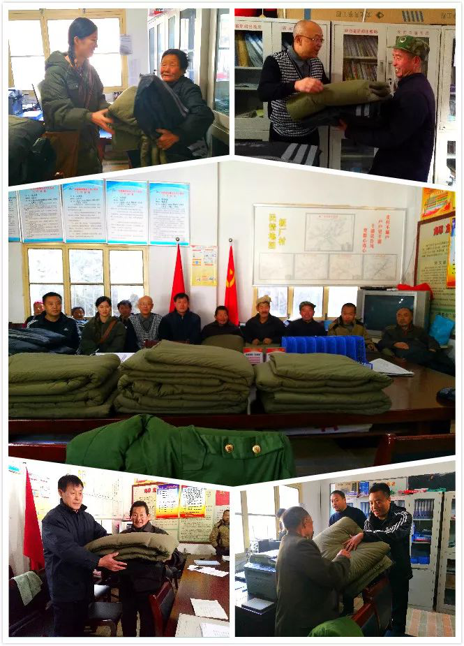

2017年11月22日，陕西万盛达企业同碑林区南院门街办深入蓝田县辋川镇板厂村送温暖。
在陕西万盛达信息科技有限公司董事长兼西安碑林区人大代表李刚的带领下，公司秉承“履职尽责、感恩社会、心系群众”的理念，在做大做强自身的同时，时刻牢记人民所赋予的荣誉和职责，心系辖区困难群众，多次积极地参与各项社会公益事业。

2017年11月22日，受董事长李刚委托，陕西万盛达企业代表程欢同碑林区南院门街道办事处党工委书记杜国荣、党工委副书记张鹏驱车60多公里，冒着凛冽的寒风来到蓝田县辋川镇板厂村看望12户贫困户，为贫困户带来了万盛达企业购买的防寒服装及棉被，并亲自将防寒物品发放到贫困户手中。
棉被棉服不仅为贫困户送去了温暖，更是为他们送去了关爱与幸福，每一位贫困户从心底感谢企业及帮扶干部，并决心一定通过自己的勤奋劳作早日实现脱贫致富。